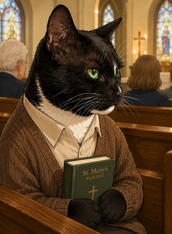
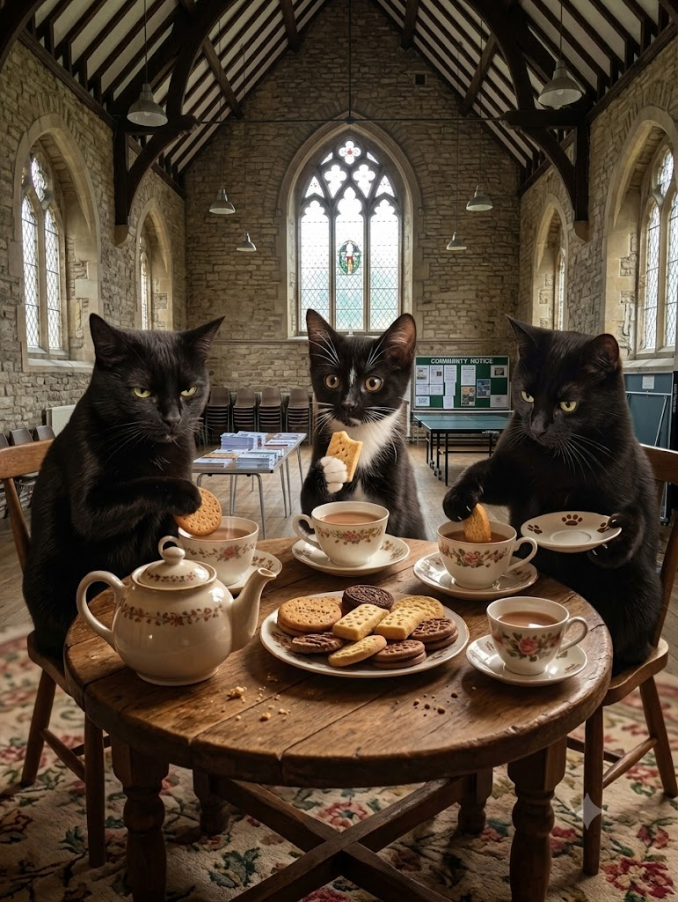
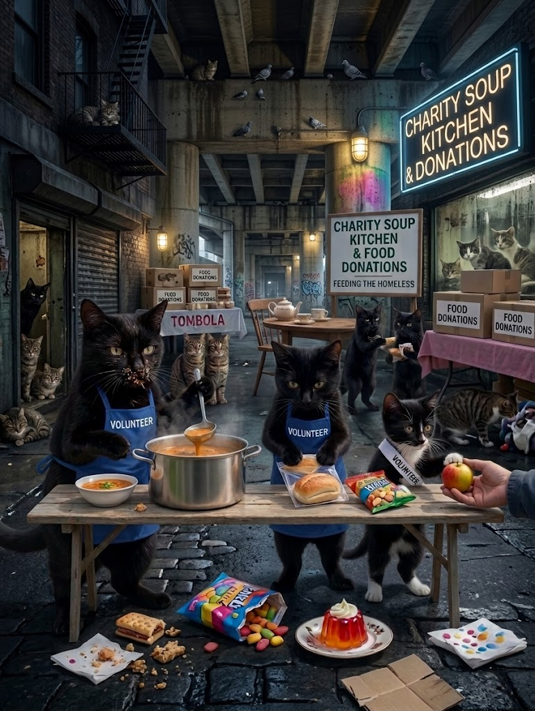
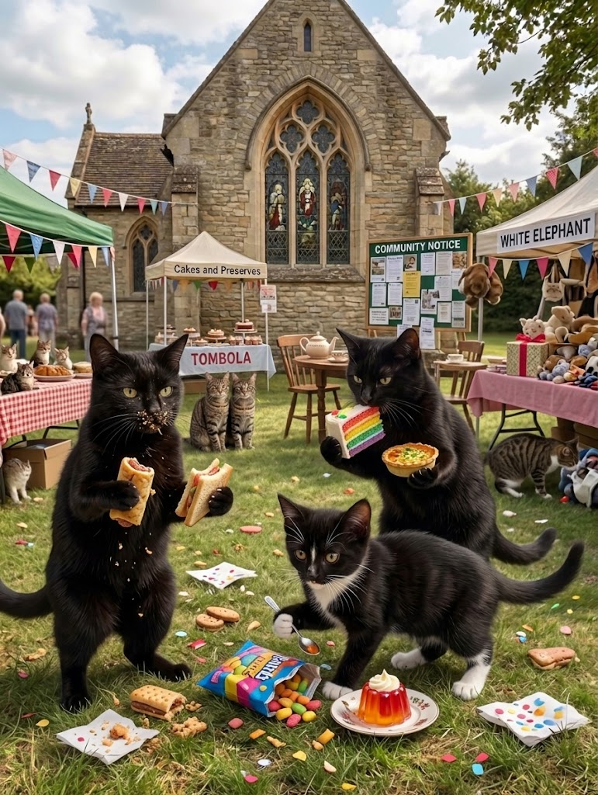
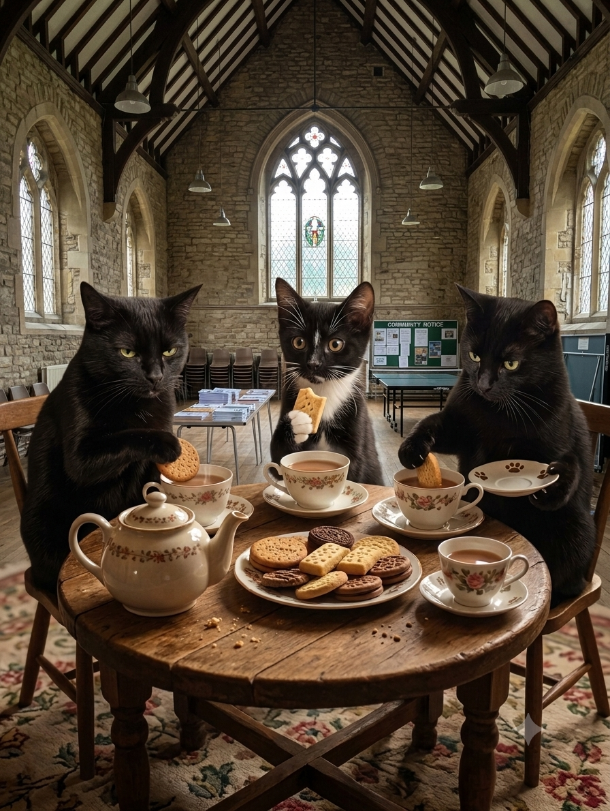

Stay curious
Questions are not interruptions to faith. They are how the conversation begins.
ExploreA seaside parish for curious souls
The Church of Colemantology is a small, open-hearted community in Bournemouth, Dorset. We gather for good questions, quiet moments, and the kind of company that leaves you lighter than it found you.
A note from the vestry
We believe a life of meaning can begin with something very small: a shared cup of tea, sunlight on the floor, a neighbour who needs carrying for a minute.
Our tradition is one of gentle attention. We look for the holy in the everyday and try not to take ourselves too seriously while we are doing it. There is room here for devotion and doubt, for laughter in the back row, and for coming exactly as you are.
Meet the parishFaces of the parish
A parish has more than one kind of calling. Here are a few of ours: showing up, sitting close, and bringing enough warmth for everyone.




Not rules. More like good intentions, written in the margin.
Questions are not interruptions to faith. They are how the conversation begins.
ExploreThere is always another chair, another story, and a little more kindness to give away.
ExploreWe come together not to escape the world, but to return to it with softer hands.
ExploreThe weekly rhythm
"A good gathering should feel a little like finding the warm patch of sun."
02 / 03
Each Sunday, we meet above the old bookshop on Charminster Road. There is singing, a short reflection, and a generous amount of tea. No prior knowledge required.
The parish calendar
Three small gatherings for the season ahead: one table, one walk, and one question worth carrying home.
Autumn / 2026A long table, a short reflection, and soup that improves with company. Bring a loaf, a story, or simply yourself.
Keep me postedA slow walk from the room to the sea, with warm drinks at the halfway point.
No lecture, no right answers. Just one good question and half an hour to sit with it.
The parish ledger
We keep a little aside for the neighbours and organisations doing the quiet work nearby. No grand gestures required, just a habit of noticing what would help.
A fictional 2026 snapshot for this demo.
Find the good room
You will find us in a bright little room between the high street and the sea. Look for the gold star in the window and the smell of something just out of the oven.
From the vestry

The Sunday letter
Occasional notes from Bournemouth: a thought, a song, and something worth noticing.